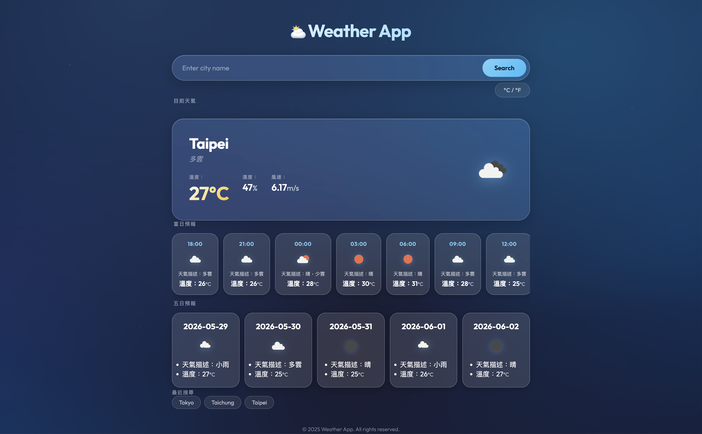

🌦️ 天氣 App

串接 OpenWeatherMap API，提供即時天氣、5日預報與每3小時詳細資料的天氣查詢應用。
為什麼做這個專案？
在完成以 DOM 操作為主的購物網站後， 下一步希望接觸真實的資料來源。 因此選擇天氣 App 作為練習， 學習如何與外部 API 溝通、處理非同步流程， 以及建立完整的錯誤處理機制。
- 非同步處理：理解 Promise 與 async/await 的運作方式
- API 串接：處理真實資料的請求、回應與錯誤情況
- Promise.all：同時取得多組資料以提升效能
- 資料轉換：利用 map、filter 處理 API 回傳資料
- 錯誤處理：建立一致的 Error Handling Flow
- 狀態管理：保存搜尋紀錄並維持使用者體驗
主要功能
- 城市搜尋與即時天氣顯示
- 5 日天氣預報
- 24 小時內每 3 小時詳細資料
- 攝氏/華氏切換
- 搜尋歷史紀錄
- 完整錯誤處理與提示
技術決策
ES6 模組化架構
將應用拆分為 config、api、ui 與 app 四個模組， 分別負責設定、資料存取、畫面渲染與應用邏輯。 透過職責分離降低模組間耦合度， 提升可維護性與擴充性。
Promise.all 並行請求
天氣 App 需要同時取得目前天氣與預報資料。 若依序等待兩個 API 回應， 會增加整體載入時間。 因此使用 Promise.all 並行發送請求， 在兩份資料都完成後再更新畫面， 提升使用者體驗。
集中式錯誤處理
API 層負責偵測與拋出錯誤， UI 層負責決定如何向使用者呈現。 這種做法避免錯誤處理邏輯散落在各處， 讓程式碼更容易維護與測試。
挑戰與解決方案
1. API 錯誤處理的細節
問題： fetch() 只有在網路層失敗時才會拋出錯誤， HTTP 404 或 500 仍會回傳成功的 Promise， 容易燥重錯誤被忽略。
解決： 在 API 層統一檢查 response.ok， 並主動拋出具有意義的錯誤訊息， 讓上層能夠統一處理。
2. 預報資料轉換
問題： OpenWeather 回傳的是每 3 小時一筆資料， 並非直接提供每日摘要。 原始資料大且不適合直接呈現給使用者。
解決： 利用 filter 與 map 篩選需要的時間區段， 再轉換成適合顯示的資料格式， 讓畫面更簡潔易度。
未來改進方向
- 加入快取機制，減少重複 API 請求
- 整合 Geolocation API，自動取得目前位置天氣
- 加入搜尋建議與自動完成
- 增加天氣趨勢圖表與更多視覺化資訊
- 導入單元測試，提高資料處理邏輯的可靠性